ECUACIONES
MODELO MATEMÁTICO DE UN MOTOR DE CORRIENTE CONTINUA
Creado por Santiago Ramírez Forero, Macjainer Molano Ramos and Francisco Salazar
TEMAS DE LA PRESENTACIÓN
Agregamos unos temitas para mejorar la experiencia
Black -
White -
League -
Sky -
Beige -
Simple
Serif -
Blood -
Night -
Moon -
Solarized
Esquema del Motor
Motor Separadamente Excitado
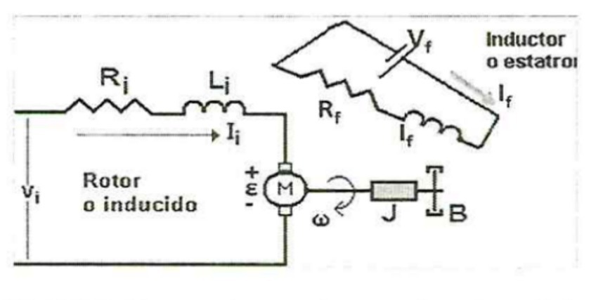Características Eléctricas:
Vi: Tensión de alimentación del rotor (voltaje aplicado al rotor).
Ii: Corriente de armadura o corriente que circula por el rotor.
Ri: Resistencia del bobinado del rotor.
Li: Inductancia del bobinado del rotor.
ε: Fuerza contra-electromotriz del motor (tensión inducida en el rotor).
If: Corriente que circula por el estator.
Rf: Resistencia del bobinado del estator.
Lf: Inductancia del bobinado del estator.
Características Eléctricas:
ω: Velocidad angular de giro del rotor
J: Momento de inercia equivalente del sistema rotor-carga.
B: Coeficiente de rozamiento viscoso (fuerza de fricción).
Lo que está ocurriendo en este contexto es que el motor se alimenta con una tensión Vi en el rotor y una tensión Vf en el estator. La corriente Ii fluye por el rotor y la corriente If circula por el estator. Esta corriente y tensión aplicadas generan torque y permiten que el motor funcione, el motor está conectado a una carga mecánica en su eje, lo que afecta su comportamiento. La velocidad angular de giro ω está determinada por la combinación de las fuerzas eléctricas y la influencia de la carga mecánica, que se rige por el momento de inercia J y el coeficiente de fricción B.
Esquema del Motor
Motor Separadamente Excitado
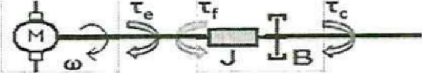
Torque Electromagnético: El torque electromagnético es generado por la interacción entre los campos magnéticos creados en el estator y el rotor debido a las corrientes eléctricas If e Ii. El torque electromagnético es proporcional a la corriente de armadura Ii y a la constante de torque electromagnético, kp. Cuanto mayor sea la corriente que circula por el rotor, mayor será el torque electromagnético y, por lo tanto, la fuerza de giro del rotor.
Carga Mecánica: Cuando el rotor gira, puede estar conectado a una carga mecánica, lo que crea un par-motor resultante. Este par-motor influye en la velocidad angular del rotor y, por lo tanto, en la velocidad de giro del motor en conjunto. El momento de inercia J de la carga determina cómo esta responde a cambios en la velocidad angular.
Fricción: La fricción en el sistema ejerce una fuerza en sentido contrario al movimiento. Esta fuerza de fricción se opone al giro del motor y se modela a través del coeficiente de fricción B. A medida que la velocidad angular ω aumenta, la fuerza de fricción también aumenta, lo que crea un torque de fricción que se opone al torque electromagnético.
La combinación de estos factores, torque electromagnético, par-motor resultante debido a la carga mecánica y torque de fricción la cual determina cómo el motor gira y a qué velocidad lo hace. Es decir que la interacción entre la parte eléctrica (corriente, campo magnético) y la parte mecánica (carga, fricción) es lo que permite que el motor realice su función de convertir energía.
OBJETIVOS
PRINCIPAL
Desarrollar un modelo matemático preciso de un motor
de corriente continua (CC) y analizar su
comportamiento utilizando MATLAB.
ESPECIFICOS
Derivar las ecuaciones diferenciales que describen
la dinámica de un motor de corriente continua,
incluyendo las relaciones entre el torque, la inercia
y la aceleración angular
Utilizar MATLAB para simular y analizar el comportamiento
del motor de corriente continua en diversas condiciones de
operación, lo que incluye el estudio de sus respuestas en
tiempo real y en estado estacionario
Deducción EDO de la Corriente y de la Velocidad Angular (Corte 1)
EDO de la Corriente
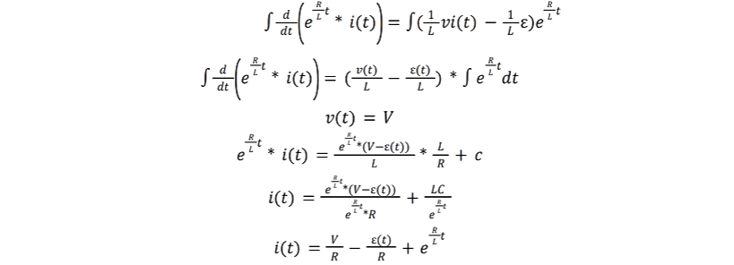Para determinar el valor de 𝐶, se parte de la condición de que 𝑡 = 0, durante este instante, la corriente es nula, esto provocado por la ausencia del flujo de electrones, debido a esto, se constata que no hay presente fuerza contra -electromotriz, por ende, el voltaje es 0.
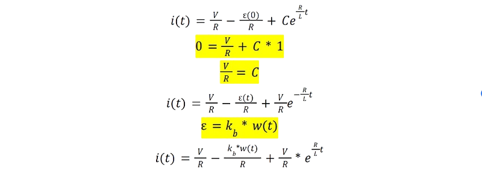EDO de la Velocidad Angular.
Al obtener la velocidad angular, esta se reemplaza en la ecuación de la corriente.
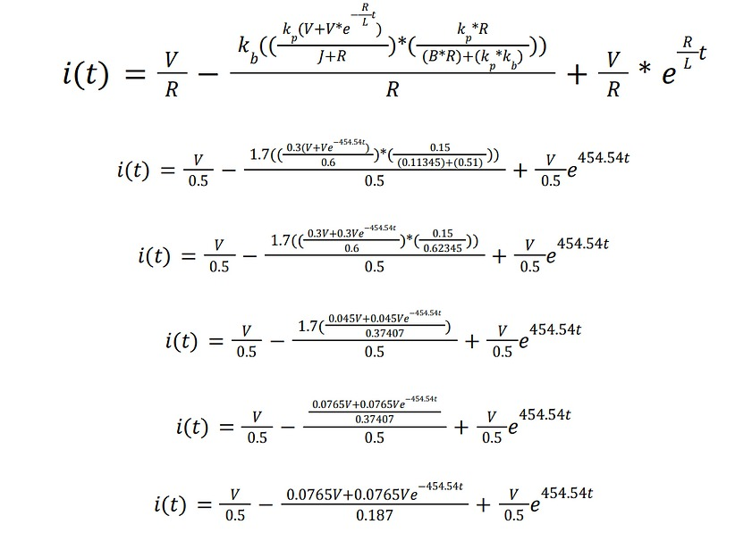Dando como resultado la siguiente función de la corriente con respecto al tiempo.
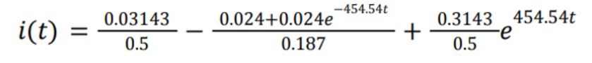Al hacer uso de matlab, da como resultado la siguiente gráfica.
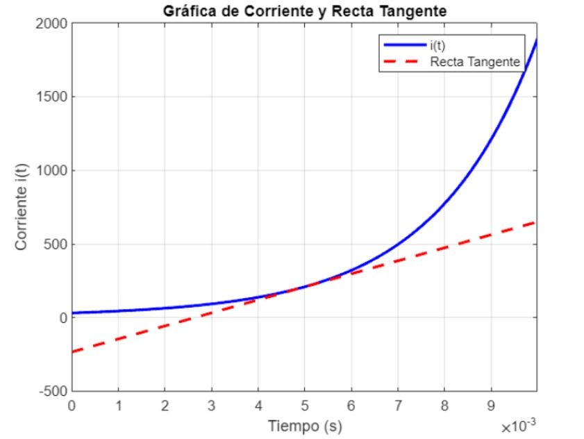ECUACION DE ORDEN SUPERIOR
¿QUE ES?
Una ecuación diferencial de orden superior es una
ecuación que involucra derivadas de una función desconocida con
respecto a una o más variables independientes. A diferencia de las
ecuaciones diferenciales de primer orden, que involucran solo la
primera derivada de la función desconocida, las ecuaciones
diferenciales de orden superior involucran derivadas de orden
superior, es decir, derivadas de segundo, tercer, cuarto, u orden
superior. Aquí hay algunas características propias de una
ecuación diferencial de orden superior:
Se pueden clasificar en lineales y no lineales, según si
la función desconocida y sus derivadas aparecen
linealmente o no en la ecuación.
Las ecuaciones diferenciales lineales de orden superior
se pueden escribir en la forma
a_n (x) (d´´y)/(dx^n )+a_(n-1) (x) (d´´y)/(dx^(n-1) )+⋯a_1 (x) dy/dx+a_0 (x)y=g(x)
donde 𝑎𝑛(𝑥),…, 𝑎0(𝑥) y 𝑔(𝑥) son funciones
conocidas, y 𝑎𝑛 (𝑥) ≠ 0 para todo x en el
dominio de la ecuación
Las ecuaciones diferenciales lineales de orden superior
se pueden resolver mediante distintos métodos, como
el método de coeficientes indeterminados, el método de
variación de parámetros, o el método del Wronskiano
Función desconocida: La ecuación diferencial de orden
superior generalmente involucra una función
desconocida, a menudo denotada como "y(x)" o alguna
otra notación similar. El objetivo es encontrar una
función que satisfaga la ecuación diferencial, es decir,
encontrar la función "y(x)" que hace que la ecuación
sea verdadera.
Derivadas múltiples: En una ecuación de orden
superior, es común que aparezcan derivadas múltiples
de la función desconocida. Estas derivadas pueden ser
de diferentes órdenes, dependiendo de la ecuación
particular. Por ejemplo, una ecuación de segundo orden
involucra la segunda derivada de "y(x)".
Soluciones generales y particulares: Las ecuaciones
diferenciales de orden superior tienen soluciones
generales y particulares. La solución general incluye
constantes arbitrarias que se determinan a partir de
condiciones iniciales o límites específicos. La solución
particular es una instancia específica de la solución
general que satisface las condiciones dadas.
ECUACION DIFERENCIAL DE SEGUNDO ORDEN DE LA VEOCIDAD ANGULAR (Corte 2)
EDO Velocidad Angular
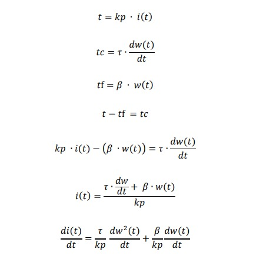Se remplaza en la siguiente ecuación:
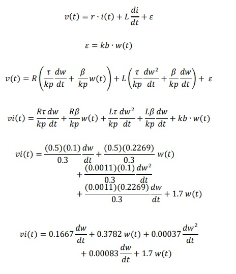Al usar Matlab, arroja la siguiente gráfica
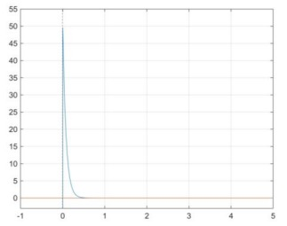MATLAB SEGUNDO CORTE
syms w(t) t
wp=110/2.0782
eqn=0.00037*diff(w,2)+0.16753*diff(w)+2.0782*w==0
S=dsolve(eqn)+wp
syms t
ec=51.1852*exp(-12.7672*t)-1.5817*exp(-400.0166*t)-52.9304*exp(-124667*t)
fplot(ec,[-1 5])
axis([-1 5 -3 55])
grid on
hold on
syms x t
x=-2.149895316875726e-291
fplot(x)
GRAFICA
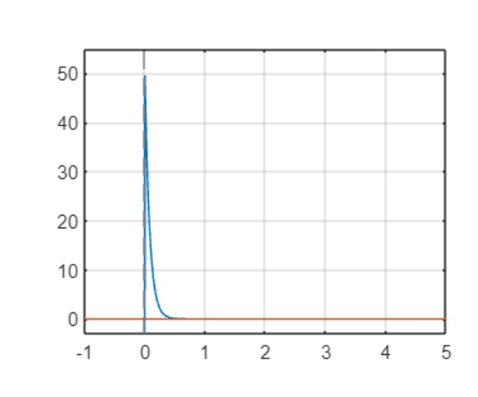MATLAB TERCER CORTE
FUNCIÓN 1 CUANDO L=0.0011
syms s t omega0 % Definir variables simbólicas
% Transformada de Laplace de la ecuación
eq = 110 == (0.00037*s^2 + 0.16753*s + 2.0782)*omega0 - (0.00037*s + 0.16753)*omega0;
% Resolver la ecuación para omega(s)
omega_s = solve(eq, omega0);
% Transformada inversa de Laplace para obtener omega(t)
omega_t = ilaplace(omega_s, s, t);
% Sustituir el valor inicial de omega(t)
omega_t = subs(omega_t, omega0, 1.0); % Reemplaza 1.0 con tu valor inicial
% Graficar omega(t)
fplot(omega_t, [0, 3.5]); % Ajusta el rango de tiempo según tus necesidades
xlabel('Tiempo (t)');
ylabel('omega(t)');
title('Gráfico de omega(t)');
GRAFICA
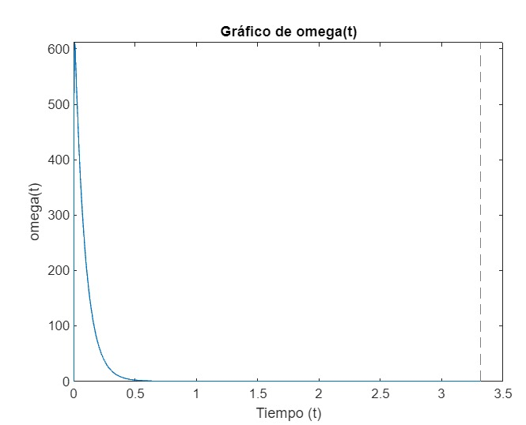FUNCIÓN 2 CUANDO L=0
syms s t omega0 % Definir variables simbólicas
% Transformada de Laplace de la ecuación
eq = 110 == (0.16753*s + 2.0782)*omega0 - 0.16753*omega0;
% Resolver la ecuación para omega(s)
omega_s = solve(eq, omega0);
% Transformada inversa de Laplace para obtener omega(t)
omega_t = ilaplace(omega_s, s, t);
% Sustituir el valor inicial de omega(t)
omega_t = subs(omega_t, omega0, 1.0); % Reemplaza 1.0 con tu valor inicial
% Graficar omega(t)
fplot(omega_t, [0, 10]); % Ajusta el rango de tiempo según tus necesidades
xlabel('Tiempo (t)');
ylabel('omega(t)');
title('Gráfico de omega(t)');
GRAFICA
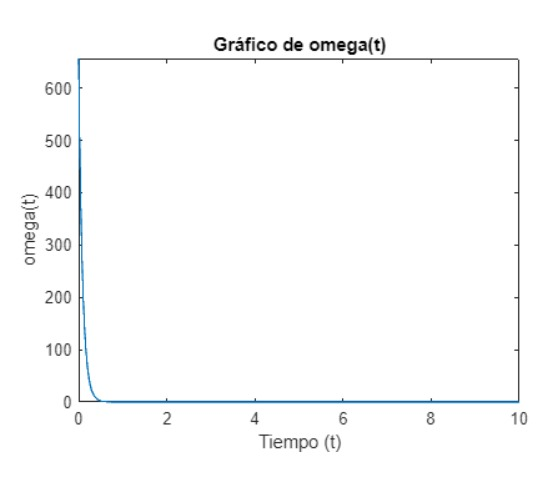CONCLUSIONES
En la investigación y análisis del motor de corriente continua (CC) utilizando ecuaciones diferenciales y la herramienta MATLAB, se han obtenido las siguientes conclusiones clave:
CONCLUSIONES
CONCLUSIONES
MODELADO PRECISO:
El uso de ecuaciones diferenciales ha demostrado ser una técnica efectiva para modelar el comportamiento del motor de CC. Esto proporciona una representación detallada y precisa de su funcionamiento en una amplia gama de condiciones
FUNCIÓN 1 CUANDO L=0.0011
En este caso, estás considerando una inductancia finita
en el circuito del motor. La inclusión de la inductancia
en el modelo afectará la respuesta del sistema. La inductancia
introduce una propiedad de almacenamiento de energía en forma
de campo magnético, lo que puede resultar en una respuesta
más suave o atenuada de la corriente en el circuito del motor
en comparación con un circuito sin inductancia.
FUNCIÓN 2 CUANDO L=0
Cuando L es igual a 0, estás asumiendo un circuito sin
inductancia. Esto implica que no hay almacenamiento de
energía en forma de campo magnético en el circuito del
motor. En la práctica, esto podría significar que el
motor está conectado directamente a la fuente de corriente,
sin ningún componente inductivo en el medio. En este caso,
la respuesta de la corriente podría ser más inmediata y
no estaría sujeta a los efectos de almacenamiento de
energía de la inductancia. La corriente podría aumentar
o disminuir de manera más abrupta en respuesta a los
cambios en el voltaje o la carga.
Export to PDF
Acá encuentras el PDF DEL CORTE 1 exported to PDF
Acá encuentras el PDF DEL CORTE 2 exported to PDF